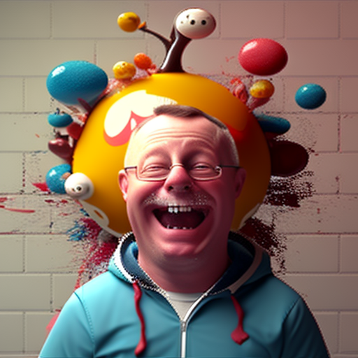

Deneux war einst einmal ein epischer Lehrer, leider ist er nun in Pension :( Deneux war übergewichtig, aber das hat niemanden gestört, er war so schön und so unglaublich schlau, dass keinerm ehr wusste was er machne osllte außer den Mund vor Staunen zu öffnen. Seine Weisheit immens so wie der Schwanz einer Kuh im Winde. Deneux war übergewichtig, aber das hat niemanden gestört, er war so schön und so unglaublich schlau, dass keinerm ehr wusste was er machne osllte außer den Mund vor Staunen zu öffnen. Seine Weisheit immens so wie der Schwanz einer Kuh im Winde.
